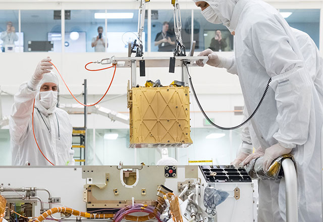
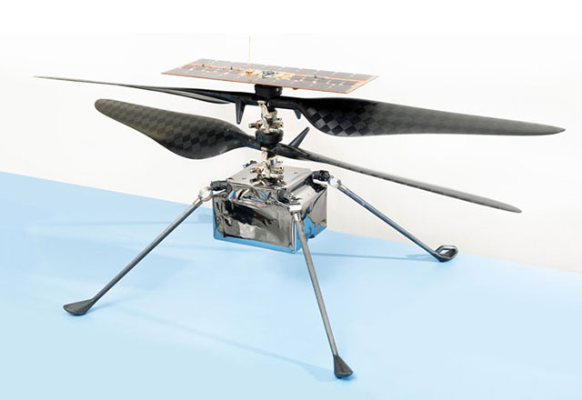
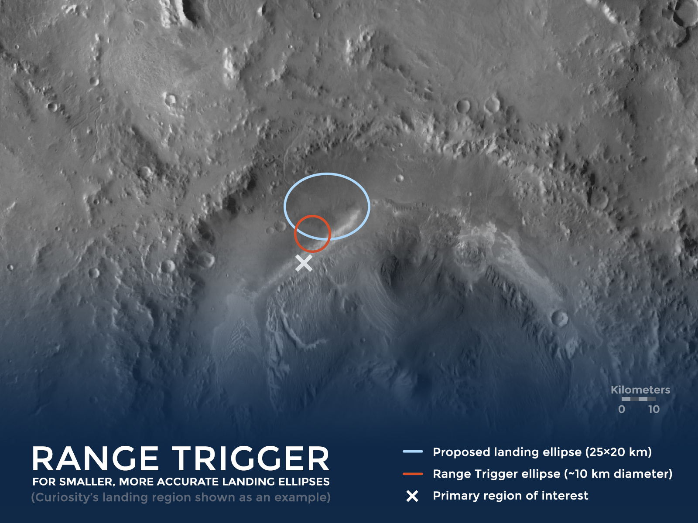
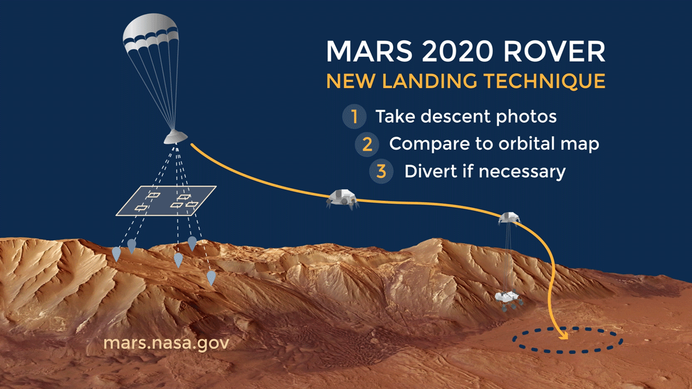
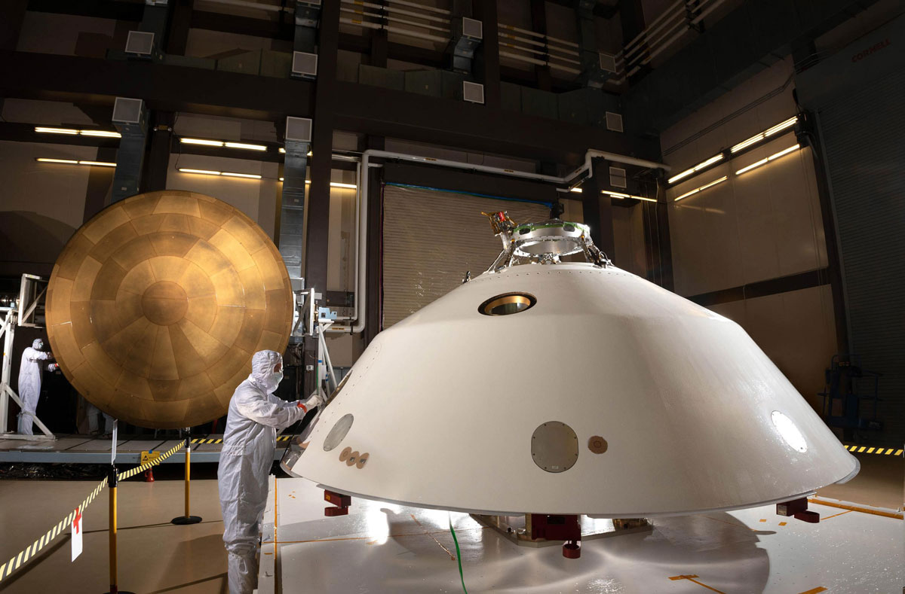

Кожна місія на Марсі є частиною постійного ланцюжка інновацій. Кожна з них покладається на минулі місії
або
перевірені технології та вносить свій внесок у майбутні місії. Цей підхід дозволяє NASA розширити межі
того,
що можливо в даний час, водночас покладаючись на минулі події.
Більша частина конструкції марсохода Perseverance, включаючи систему входу, спуску та посадки,
безпосередньо
успадкована від марсохода Curiosity, який висадився на Марс у 2012 році. Perseverance демонструє нові
технології та вдосконалені технології входу, спуску та посадки , що допоможе прокласти шлях для
майбутніх
робототехнічних та людських місій на Місяць і Марс.
Демонстрації технологій на борту наполегливості
Демонстрація технологій - це сміливі експерименти, які випробовують нові інструменти. Випробовуючи
перспективні технології в меншому масштабі, інженери та вчені можуть відкрити нові можливості для
майбутніх
досліджень. Насправді, найперший марсохід на Марсі - Sojourner - був демонстраційним експериментом
технології на місії Mars Pathfinder. Він з'явився в 1997 році і довів, що на Марсі можна дистанційно
керувати транспортним засобом.
Марсохід Perseverance проводить дві демонстрації технологій на Марс:

MOXIE
Прилад MOXIE, який знаходиться всередині корпусу ровера, буде перевіряти технологію, яка перетворює
вуглекислий газ в атмосфері Марса в кисень. Використання місцевих ресурсів, знайдених на планеті,
буде важливим для майбутніх місій людини на Марсі.

Марсовий вертоліт
Під марсоходом знаходиться гелікоптер винахідливості Марс: невеликий, автономний роторкрафт,
призначений для випробування - вперше - польоту в тонкій марсіанській атмосфері.
Експерименти MOXIE та винахідливість мають дуже цілеспрямований обсяг, оскільки вони прагнуть довести
першу в своєму роді здатність. Успіх цих демонстрацій технологій не пов'язаний із загальним успіхом
марсохода Perseverance та місії Mars 2020.
Технології входу, спуску та посадки
Місія марсохода Mars 2020 використовує різні нові технології під час входу, спуску та посадки :
Дальний тригер - для точного встановлення часу парашута
Відносна навігація по місцевості - щоб допомогти уникнути небезпечної місцевості
Удосконалений пакет датчиків аерокорпуса - для запису того, що відчуває космічний корабель під
час посадки та як він працює
На додаток до цих технологій, Perseverance також оснащений новим набором камер спуску та мікрофоном для
документування прицілів та звуків посадки.
Тригер дальності: Посадка на Марс більш точно
Важко сісти на Марс, а ще важче посадити марсохід саме в багатих на науку місцях, які хоче вивчити
наукова група. Попередні ровери приземлялись у загальному районі областей, призначених для вивчення, але
дорогоцінні тижні та місяці можна використати, просто подорожуючи до цікавого місця. Технологія Range
Trigger зменшує розмір посадкового еліпса (область овальної форми навколо цілі посадки) більш ніж на 50
відсотків, допомагаючи розмістити ровер на землі ближче до головної цілі, ніж це було можливо раніше.
Менший розмір еліпса дозволяє команді місії приземлитися на деяких ділянках, де більший еліпс був би
занадто ризикованим, оскільки він містив би більше небезпек на поверхні. Це дає вченим доступ до більш
пріоритетних сайтів із середовищами, які могли б підтримувати минуле життя мікробів.

Основне поліпшення точності посадки : Техніка дальнобійного
спуску значно
зменшує еліпс посадки ровера, дозволяючи йому приземлитися ближче до цільової області, що
представляє найбільший науковий інтерес. Цей приклад показує еліпс Наполегливості стосовно
посадкового еліпса Curiosity з 2012 року. Наполегливість буде приземлятися в іншому місці. Кредит:
NASA / JPL-Caltech.
Вся справа в термінах
Ключем до нової техніки точної посадки є вибір потрібного моменту для натискання «спускового гачка», що
звільняє парашут космічного корабля. "Далець спрацьовування" - це назва техніки, яку Марс 2020
використовує для оцінки часу розгортання парашута. Раніше місії розгорнули свої парашути якомога раніше,
після того, як космічний корабель досяг бажаної швидкості. Замість того, щоб розгорнутись якомога
раніше, пусковий пусковий апарат Mars 2020 розгортає парашут на основі положення космічного корабля щодо
бажаної цілі посадки. Це означає, що парашут можна було розгорнути раніше чи пізніше, залежно від того,
наскільки він близький до бажаної цілі. Якби космічний корабель збирався перестрілити ціль посадки,
парашут був би розгорнутий раніше. Якби він не досяг цілі, парашут був би розгорнутий пізніше.
Гоління часу на поїздці
Стратегія Range Trigger може доставити марсохід Mars 2020 Perseverance на кілька миль ближче до точного
місця в зоні посадки, яке найбільше хочуть вивчити вчені. Він міг поголитися стільки, скільки за рік від
їзди маршрутного автомобіля до місця роботи. Ще однією потенційною перевагою тестування датчика
дальності є те, що це зменшить ризик будь-якої майбутньої місії повернення зразків Марса, оскільки це
допоможе цій місії приземлитися ближче до зразків, що зберігаються на поверхні.
Навігація щодо рельєфу місцевості: Уникання складних рельєфів
Відносне судноплавство є критично важливим для дослідження Марса наступного покоління. Деякі з
найцікавіших місць для вивчення лежать на складній місцевості, з небезпеками, такими як круті схили та
великі скелі. До цього часу багато з цих потенційних місць посадки були заборонені. Ризики приземлення
на складній місцевості були занадто великі. Для минулих місій на Марсі 99 відсотків потенційної площі
посадки (еліпс посадки) повинен був бути вільним від небезпечних схилів та гірських порід, щоб
забезпечити безпечну посадку. Використовуючи навігацію відносно рельєфу місцевості, команда місії Mars
2020 може розглянути все більше і більше цікавих місць посадки з набагато меншим ризиком.

Уникнення небезпек під час посадки : Ця анімація зображує
техніку відносної
навігації по місцевості, включену в систему входу, спуску та посадки марсохода Mars 2020 Зробивши
знімки поверхні під час її спуску, марсохід може швидко визначити, чи небезпечний його рух у
напрямку зони посадки, яку визначила команда місії. За необхідності, маневр перенаправлення може
направити його на більш безпечну місцевість. Кредит: NASA / JPL-Caltech.
Як навігація, що стосується місцевості, покращує виїзд, спуск і посадку
Щоб зменшити ризик виходу, спуску та посадки , для наполегливості важливі дві ключові здібності:
знаючи, куди воно прямує
можливість перенаправитись у безпечніше місце, якщо прямувати до небезпечної місцевості
Навігація, що стосується місцевості, дозволяє роверу робити набагато точніші оцінки свого положення щодо
землі під час спуску. У попередніх місіях космічний корабель, що несе марсохід, оцінював своє місце
розташування відносно землі перед тим, як увійти в атмосферу Марса, а також під час входу, грунтуючись
на початковому припущенні з радіометричних даних, наданих через Глибококосмос . Помилка оцінки цієї
техніки становила приблизно 1 - 2 кілометри, яка зростає до приблизно 2 - 3 кілометрів під час в'їзду.
За допомогою навігації, що стосується рельєфу місцевості, марсохід Perseverance може оцінити
своє місце розташування, опускаючись крізь атмосферу Марса на своєму парашуті. Це дозволяє марсоходу
визначити своє положення щодо землі з точністю приблизно до 40 футів (40 метрів) або вище.
Як працює навігація відносно місцевості
Використовуючи зображення з орбіт Марса, команда місії створює карту місця посадки.
Ровер зберігає цю карту у своєму новому комп’ютерному «мозку», розробленому спеціально для
підтримки навігації відносно місцевості.
Спускаючись парашутом, ровер робить фотографії швидко наближається поверхні.
Щоб зрозуміти, куди він прямує, ровер швидко порівнює орієнтири, які він бачить на знімках, зі
своєю бортовою картою.
Озброївшись знанням того, куди він прямує, марсохід шукає іншу карту бортових зон безпечної
посадки, щоб знайти найбезпечніше місце, куди він може дійти. Марсохід може уникнути
небезпечного грунту діаметром близько 1100 футів (335 метрів) (приблизно розміром з три
футбольних поля з кінця в кінець), відводячи себе до більш безпечної землі.
Дивіться "Відносна навігація по місцевості" в дії під час випробувань у
Каліфорнійській Долині смерті.
Розширений пакет сенсорів Aeroshell:
збір ключових даних для майбутніх висадок на Марс
Потрапляючи в атмосферу Марса, Наполегливість надійно укладена в його аерокорпусі, захисній капсулі, що
складається з теплового екрану і задньої оболонки . Цей аерокорпус дуже схожий на той, який
використовував місія Наукової лабораторії Марса та його марсохід Curiosity.

Запис досвіду EDL : задня частина оболонки космічного корабля
Mars 2020
(передній план) та тепловий екран (фон) оснащені MEDLI2, набором датчиків для вимірювання
навколишнього середовища та продуктивності автомобіля під час його бурхливого спуску на Марс.
Кредит: NASA / JPL-Caltech.
Під час спуску Curiosity його інженерна команда зафіксувала цінний запис про ефективність їх теплового
екрану. Вони зробили це за допомогою MEDLI, пакета датчиків, назва якого розшифровується як "MSL Entry,
Descent and Landing Instrumentation".
Наполегливість робить наступний крок за допомогою MEDLI2, набору датчиків наступного покоління, який
збирає дані як від теплового екрану, так і від задньої оболонки. Вимірюючи температури та тиски, які
відчуває транспортний засіб, та відстежуючи ефективність теплового екрану, команда може ще раз оновити
своє розуміння марсіанської атмосфери. Дані, зібрані пізніше з метеостанції ровера, дадуть їм ще більше
уявлень. Разом ця інформація допоможе їм розробити майбутні системи входу, спуску та посадки, зменшуючи
ризики як для роботизованих, так і для майбутніх місій людини на Марсі.